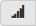

Legacy visualizations
This article describes legacy Databricks visualizations. See Visualizations in Databricks notebooks for current visualization support.
Databricks also natively supports visualization libraries in Python and R and lets you install and use third-party libraries.
Create a legacy visualization
To create a legacy visualization from a results cell, click + and select Legacy Visualization.
Legacy visualizations support a rich set of plot types:
Choose and configure a legacy chart type
To choose a bar chart, click the bar chart icon :
To choose another plot type, click to the right of the bar chart and choose the plot type.
Legacy chart toolbar
Both line and bar charts have a built-in toolbar that support a rich set of client-side interactions.
To configure a chart, click Plot Options….
The line chart has a few custom chart options: setting a Y-axis range, showing and hiding points, and displaying the Y-axis with a log scale.
For information about legacy chart types, see:
Color consistency across charts
Databricks supports two kinds of color consistency across legacy charts: series set and global.
Series set color consistency assigns the same color to the same value if you have series with the
same values but in different orders (for example, A = ["Apple", "Orange", "Banana"] and B =
["Orange", "Banana", "Apple"]). The values are sorted before plotting, so both legends are sorted
the same way (["Apple", "Banana", "Orange"]), and the same values are given the same colors. However,
if you have a series C = ["Orange", "Banana"], it would not be color consistent with set
A because the set isn’t the same. The sorting algorithm would assign the first color to “Banana” in
set C but the second color to “Banana” in set A. If you want these series to be color consistent,
you can specify that charts should have global color consistency.
In global color consistency, each value is always mapped to the same color no matter what values the series have. To enable this for each chart, select the Global color consistency checkbox.
Note
To achieve this consistency, Databricks hashes directly from values to colors. To avoid collisions (where two values go to the exact same color), the hash is to a large set of colors, which has the side effect that nice-looking or easily distinguishable colors cannot be guaranteed; with many colors there are bound to be some that are very similar looking.
Machine learning visualizations
In addition to the standard chart types, legacy visualizations support the following machine learning training parameters and results:
Residuals
For linear and logistic regressions, you can render a fitted versus residuals plot. To obtain this plot, supply the model and DataFrame.
The following example runs a linear regression on city population to house sale price data and then displays the residuals versus the fitted data.
# Load data
pop_df = spark.read.csv("/databricks-datasets/samples/population-vs-price/data_geo.csv", header="true", inferSchema="true")
# Drop rows with missing values and rename the feature and label columns, replacing spaces with _
from pyspark.sql.functions import col
pop_df = pop_df.dropna() # drop rows with missing values
exprs = [col(column).alias(column.replace(' ', '_')) for column in pop_df.columns]
# Register a UDF to convert the feature (2014_Population_estimate) column vector to a VectorUDT type and apply it to the column.
from pyspark.ml.linalg import Vectors, VectorUDT
spark.udf.register("oneElementVec", lambda d: Vectors.dense([d]), returnType=VectorUDT())
tdata = pop_df.select(*exprs).selectExpr("oneElementVec(2014_Population_estimate) as features", "2015_median_sales_price as label")
# Run a linear regression
from pyspark.ml.regression import LinearRegression
lr = LinearRegression()
modelA = lr.fit(tdata, {lr.regParam:0.0})
# Plot residuals versus fitted data
display(modelA, tdata)
ROC curves
For logistic regressions, you can render an ROC curve. To obtain this plot, supply the model, the prepped data that is input to the fit method, and the parameter "ROC".
The following example develops a classifier that predicts if an individual earns <=50K or >50k a year from various attributes of the individual. The Adult dataset derives from census data, and consists of information about 48842 individuals and their annual income.
The example code in this section uses one-hot encoding.
# This code uses one-hot encoding to convert all categorical variables into binary vectors.
schema = """`age` DOUBLE,
`workclass` STRING,
`fnlwgt` DOUBLE,
`education` STRING,
`education_num` DOUBLE,
`marital_status` STRING,
`occupation` STRING,
`relationship` STRING,
`race` STRING,
`sex` STRING,
`capital_gain` DOUBLE,
`capital_loss` DOUBLE,
`hours_per_week` DOUBLE,
`native_country` STRING,
`income` STRING"""
dataset = spark.read.csv("/databricks-datasets/adult/adult.data", schema=schema)
from pyspark.ml import Pipeline
from pyspark.ml.feature import OneHotEncoder, StringIndexer, VectorAssembler
categoricalColumns = ["workclass", "education", "marital_status", "occupation", "relationship", "race", "sex", "native_country"]
stages = [] # stages in the Pipeline
for categoricalCol in categoricalColumns:
# Category indexing with StringIndexer
stringIndexer = StringIndexer(inputCol=categoricalCol, outputCol=categoricalCol + "Index")
# Use OneHotEncoder to convert categorical variables into binary SparseVectors
encoder = OneHotEncoder(inputCols=[stringIndexer.getOutputCol()], outputCols=[categoricalCol + "classVec"])
# Add stages. These are not run here, but will run all at once later on.
stages += [stringIndexer, encoder]
# Convert label into label indices using the StringIndexer
label_stringIdx = StringIndexer(inputCol="income", outputCol="label")
stages += [label_stringIdx]
# Transform all features into a vector using VectorAssembler
numericCols = ["age", "fnlwgt", "education_num", "capital_gain", "capital_loss", "hours_per_week"]
assemblerInputs = [c + "classVec" for c in categoricalColumns] + numericCols
assembler = VectorAssembler(inputCols=assemblerInputs, outputCol="features")
stages += [assembler]
# Run the stages as a Pipeline. This puts the data through all of the feature transformations in a single call.
partialPipeline = Pipeline().setStages(stages)
pipelineModel = partialPipeline.fit(dataset)
preppedDataDF = pipelineModel.transform(dataset)
# Fit logistic regression model
from pyspark.ml.classification import LogisticRegression
lrModel = LogisticRegression().fit(preppedDataDF)
# ROC for data
display(lrModel, preppedDataDF, "ROC")
To display the residuals, omit the "ROC" parameter:
display(lrModel, preppedDataDF)
Decision trees
Legacy visualizations support rendering a decision tree.
To obtain this visualization, supply the decision tree model.
The following examples train a tree to recognize digits (0 - 9) from the MNIST dataset of images of handwritten digits and then displays the tree.
trainingDF = spark.read.format("libsvm").load("/databricks-datasets/mnist-digits/data-001/mnist-digits-train.txt").cache()
testDF = spark.read.format("libsvm").load("/databricks-datasets/mnist-digits/data-001/mnist-digits-test.txt").cache()
from pyspark.ml.classification import DecisionTreeClassifier
from pyspark.ml.feature import StringIndexer
from pyspark.ml import Pipeline
indexer = StringIndexer().setInputCol("label").setOutputCol("indexedLabel")
dtc = DecisionTreeClassifier().setLabelCol("indexedLabel")
# Chain indexer + dtc together into a single ML Pipeline.
pipeline = Pipeline().setStages([indexer, dtc])
model = pipeline.fit(trainingDF)
display(model.stages[-1])
val trainingDF = spark.read.format("libsvm").load("/databricks-datasets/mnist-digits/data-001/mnist-digits-train.txt").cache
val testDF = spark.read.format("libsvm").load("/databricks-datasets/mnist-digits/data-001/mnist-digits-test.txt").cache
import org.apache.spark.ml.classification.{DecisionTreeClassifier, DecisionTreeClassificationModel}
import org.apache.spark.ml.feature.StringIndexer
import org.apache.spark.ml.Pipeline
val indexer = new StringIndexer().setInputCol("label").setOutputCol("indexedLabel")
val dtc = new DecisionTreeClassifier().setLabelCol("indexedLabel")
val pipeline = new Pipeline().setStages(Array(indexer, dtc))
val model = pipeline.fit(trainingDF)
val tree = model.stages.last.asInstanceOf[DecisionTreeClassificationModel]
display(tree)
Structured Streaming DataFrames
To visualize the result of a streaming query in real time you can display a Structured Streaming DataFrame in Scala and Python.
streaming_df = spark.readStream.format("rate").load()
display(streaming_df.groupBy().count())
val streaming_df = spark.readStream.format("rate").load()
display(streaming_df.groupBy().count())
display supports the following optional parameters:
streamName: the streaming query name.trigger(Scala) andprocessingTime(Python): defines how often the streaming query is run. If not specified, the system checks for availability of new data as soon as the previous processing has completed. To reduce the cost in production, Databricks recommends that you always set a trigger interval. With Databricks Runtime 8.0 and above, the default trigger interval is 500 ms.checkpointLocation: the location where the system writes all the checkpoint information. If it is not specified, the system automatically generates a temporary checkpoint location on DBFS. In order for your stream to continue processing data from where it left off, you must provide a checkpoint location. Databricks recommends that in production you always specify thecheckpointLocationoption.
streaming_df = spark.readStream.format("rate").load()
display(streaming_df.groupBy().count(), processingTime = "5 seconds", checkpointLocation = "dbfs:/<checkpoint-path>")
import org.apache.spark.sql.streaming.Trigger
val streaming_df = spark.readStream.format("rate").load()
display(streaming_df.groupBy().count(), trigger = Trigger.ProcessingTime("5 seconds"), checkpointLocation = "dbfs:/<checkpoint-path>")
For more information about these parameters, see Starting Streaming Queries.
displayHTML function
Databricks programming language notebooks (Python, R, and Scala) support HTML graphics using the displayHTML function;
you can pass the function any HTML, CSS, or JavaScript code. This function supports interactive graphics using JavaScript libraries such as D3.
For examples of using displayHTML, see:
Note
The displayHTML iframe is served from the domain databricksusercontent.com, and the iframe sandbox includes the allow-same-origin attribute. databricksusercontent.com must be accessible from your browser. If it is currently blocked by your corporate network, it must added to an allow list.
Images
Columns containing image data types are rendered as rich HTML. Databricks attempts to render image thumbnails for DataFrame columns matching the Spark ImageSchema.
Thumbnail rendering works for any images successfully read in through the spark.read.format('image') function. For image values generated through other means, Databricks supports the rendering of 1, 3, or 4 channel images (where each channel consists of a single byte), with the following constraints:
One-channel images:
modefield must be equal to 0.height,width, andnChannelsfields must accurately describe the binary image data in thedatafield.Three-channel images:
modefield must be equal to 16.height,width, andnChannelsfields must accurately describe the binary image data in thedatafield. Thedatafield must contain pixel data in three-byte chunks, with the channel ordering(blue, green, red)for each pixel.Four-channel images:
modefield must be equal to 24.height,width, andnChannelsfields must accurately describe the binary image data in thedatafield. Thedatafield must contain pixel data in four-byte chunks, with the channel ordering(blue, green, red, alpha)for each pixel.
Visualizations in Python
In this section:
Seaborn
You can also use other Python libraries to generate plots. The Databricks Runtime includes the seaborn visualization library. To create a seaborn plot, import the library, create a plot, and pass the plot to the display function.
import seaborn as sns
sns.set(style="white")
df = sns.load_dataset("iris")
g = sns.PairGrid(df, diag_sharey=False)
g.map_lower(sns.kdeplot)
g.map_diag(sns.kdeplot, lw=3)
g.map_upper(sns.regplot)
display(g.fig)
Visualizations in R
To plot data in R, use the display function as follows:
library(SparkR)
diamonds_df <- read.df("/databricks-datasets/Rdatasets/data-001/csv/ggplot2/diamonds.csv", source = "csv", header="true", inferSchema = "true")
display(arrange(agg(groupBy(diamonds_df, "color"), "price" = "avg"), "color"))
You can use the default R plot function.
fit <- lm(Petal.Length ~., data = iris)
layout(matrix(c(1,2,3,4),2,2)) # optional 4 graphs/page
plot(fit)
You can also use any R visualization package. The R notebook captures the resulting plot as a .png and displays it inline.
In this section:
Lattice
The Lattice package supports trellis graphs—graphs that display a variable or the relationship between variables, conditioned on one or more other variables.
library(lattice)
xyplot(price ~ carat | cut, diamonds, scales = list(log = TRUE), type = c("p", "g", "smooth"), ylab = "Log price")
DandEFA
The DandEFA package supports dandelion plots.
install.packages("DandEFA", repos = "https://cran.us.r-project.org")
library(DandEFA)
data(timss2011)
timss2011 <- na.omit(timss2011)
dandpal <- rev(rainbow(100, start = 0, end = 0.2))
facl <- factload(timss2011,nfac=5,method="prax",cormeth="spearman")
dandelion(facl,bound=0,mcex=c(1,1.2),palet=dandpal)
facl <- factload(timss2011,nfac=8,method="mle",cormeth="pearson")
dandelion(facl,bound=0,mcex=c(1,1.2),palet=dandpal)
Plotly
The Plotly R package relies on htmlwidgets for R. For installation instructions and a notebook, see htmlwidgets.
Visualizations in Scala
To plot data in Scala, use the display function as follows:
val diamonds_df = spark.read.format("csv").option("header","true").option("inferSchema","true").load("/databricks-datasets/Rdatasets/data-001/csv/ggplot2/diamonds.csv")
display(diamonds_df.groupBy("color").avg("price").orderBy("color"))